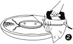
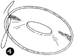

1952—How to Make Hats
by Ruby Carnahan
Blocking Straw Bodies of Baku, Sisal, Shantung
SIZING
Glue sizing straw bodies is a professional method and is entirely optional. Good results are obtained without glue sizing straw bodies. Baku, sisal and shantung straw bodies may be dipped in glue sizing and allowed to dry over night before using.
BLOCKING CROWN
 (Illus. 1) Wet straw body until soft and pliable. Place on block, stretching
and pulling straw until all fullness has been worked out and crown is free
from wrinkles. Pin around bottom of block and tie a blocking cord over straw
around block at bottom of crown. Allow to dry thoroughly.
(Illus. 1) Wet straw body until soft and pliable. Place on block, stretching
and pulling straw until all fullness has been worked out and crown is free
from wrinkles. Pin around bottom of block and tie a blocking cord over straw
around block at bottom of crown. Allow to dry thoroughly.
(Illus. 2) Measure desired depth of crown from back to front and from side to side and draw a line around crown on straw. Remove crown from block and stitch on line around crown on sewing machine. Cut off excess straw around crown 1/2" below stitching.
BLOCKING BRIM
 Stretch straw brim out on a flat surface, working out fullness and smoothing
out all wrinkles. Turn straw up 1/2" on headband block and pin to block around
headsize. (Illus. 3) Measure desired width of brim from headsize to brim edge
and draw a line around brim edge on straw. Remove from block and machine stitch
on line. Cut off excess straw 1/2" outside stitching.
Stretch straw brim out on a flat surface, working out fullness and smoothing
out all wrinkles. Turn straw up 1/2" on headband block and pin to block around
headsize. (Illus. 3) Measure desired width of brim from headsize to brim edge
and draw a line around brim edge on straw. Remove from block and machine stitch
on line. Cut off excess straw 1/2" outside stitching.
FINISHING BRIM WITH PLAIN HEM
Measure a wire to fit around stitching on brim. Join ends of wire with a joiner. Turn straw brim edge over wire 1/2" to underside. Baste and stitch around brim edge.
FINISHING BRIM WITH RIBBON EDGE
Use 3" wide grosgrain ribbon. Dampen, fold and lightly press and swirl ribbon. Stretch and pin edge of ribbon to brim edge, easing or stretching ribbon to fit where necessary. Lap one end of ribbon over the other in back. Sew ribbon to straw using a back stitch. Turn ribbon over brim edge and pin to underside. (Illus. 4) Sew around brim with small stitches on outside of ribbon and slanting needle as you go through to take the next stitch.